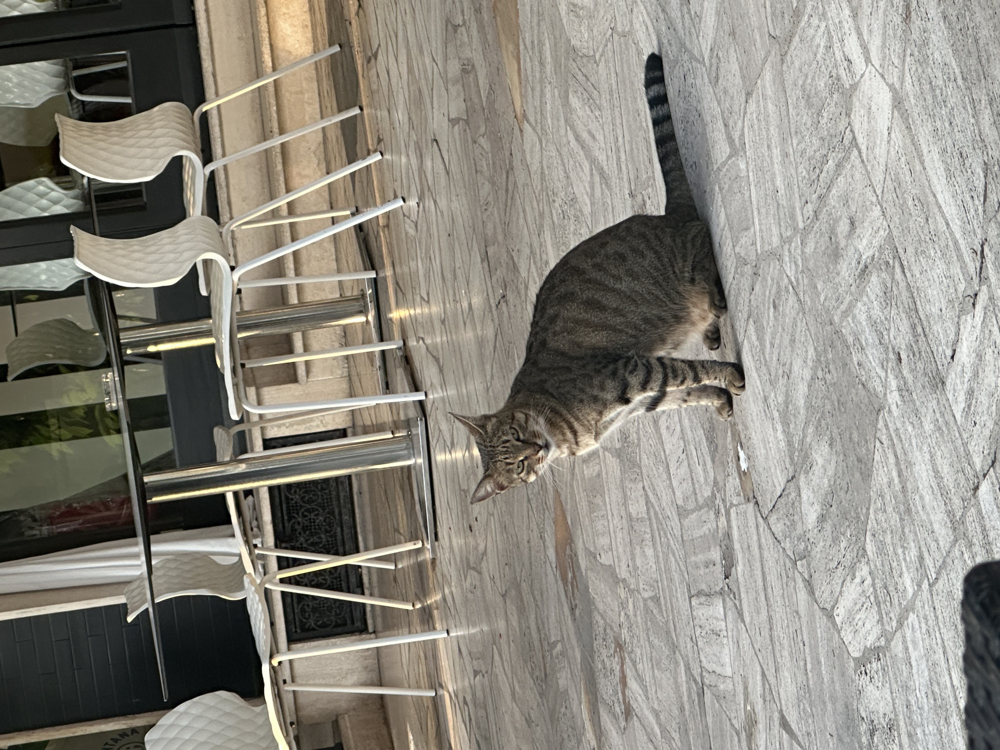
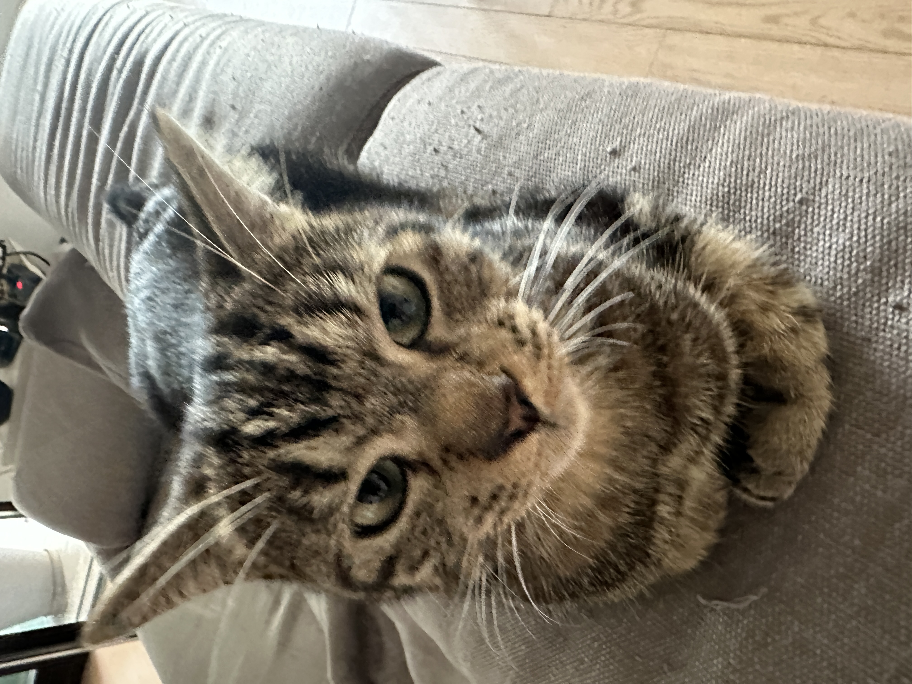
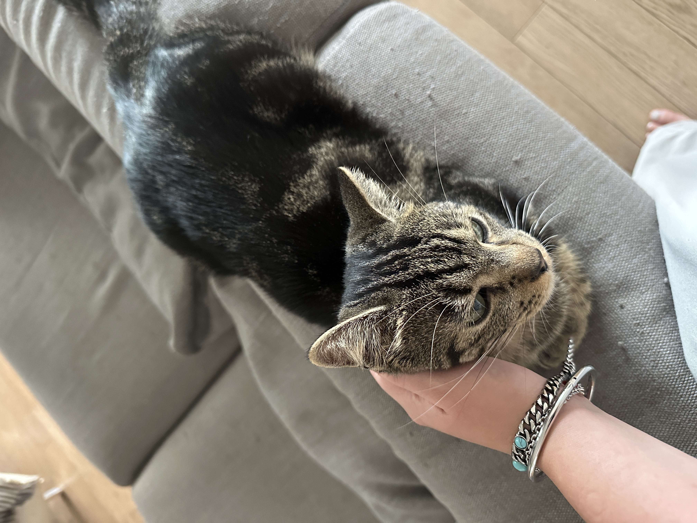
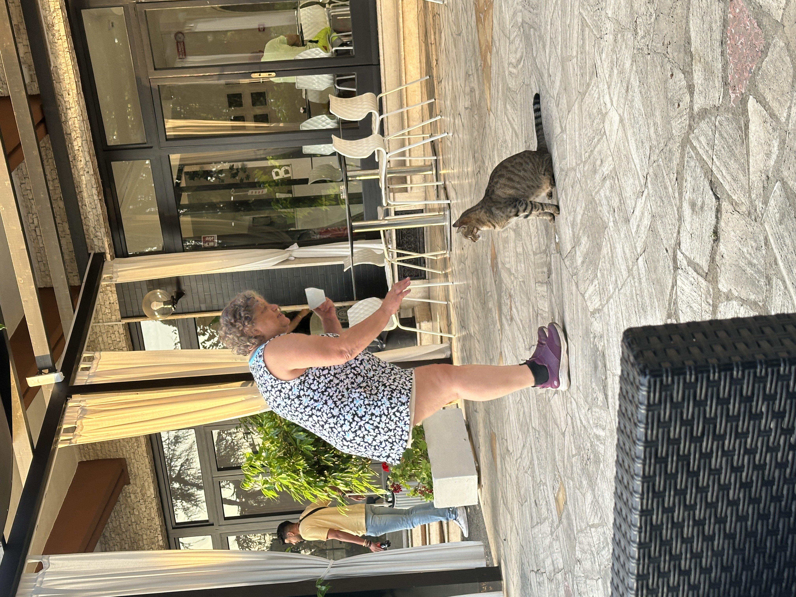
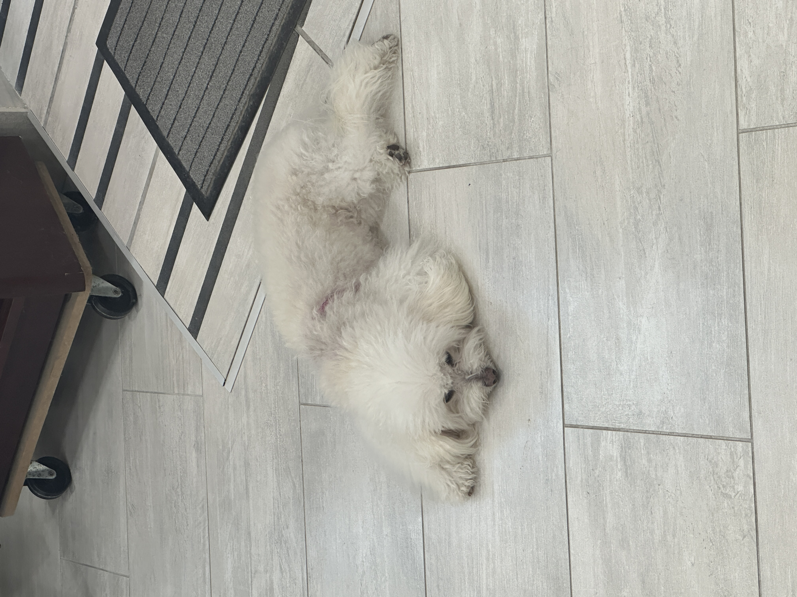

Ciao from the Cats of Italy! 🇮🇹
I have visited Italy twice and the gatto's (cats) are my second favourite thing, other then the food of course!

This cat was at our hotel when we arrived in Rome after a long flight.

Orange cat in the streets of Capri.

Restaurant kitty wanting to play while we eat our pasta..

My host family's cat Bjorn from back when I was an Au Pair..

Bjorn...again. I love him.

Nonnas kitty Marceau.

My grandmother hanging with the hotel kitty..

I know we are talking about cats here but look at how cute this dog is.